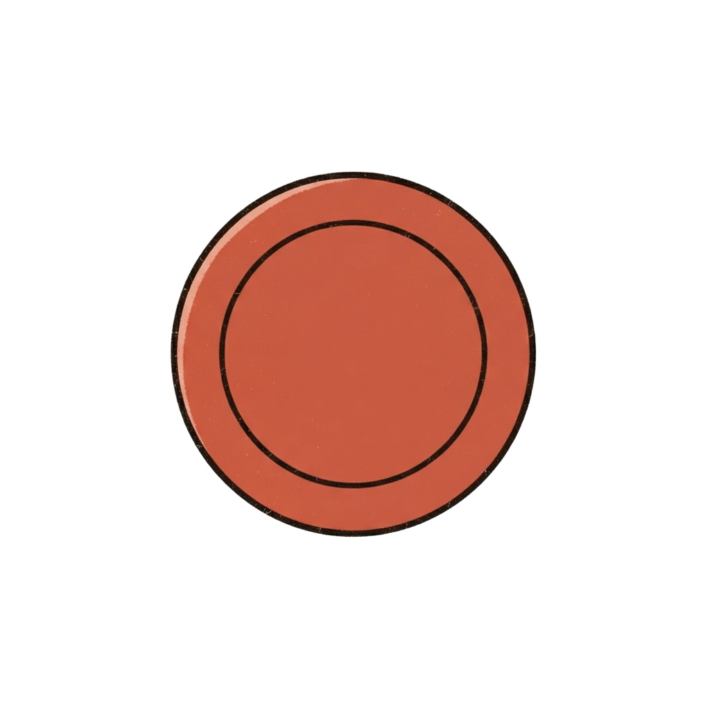
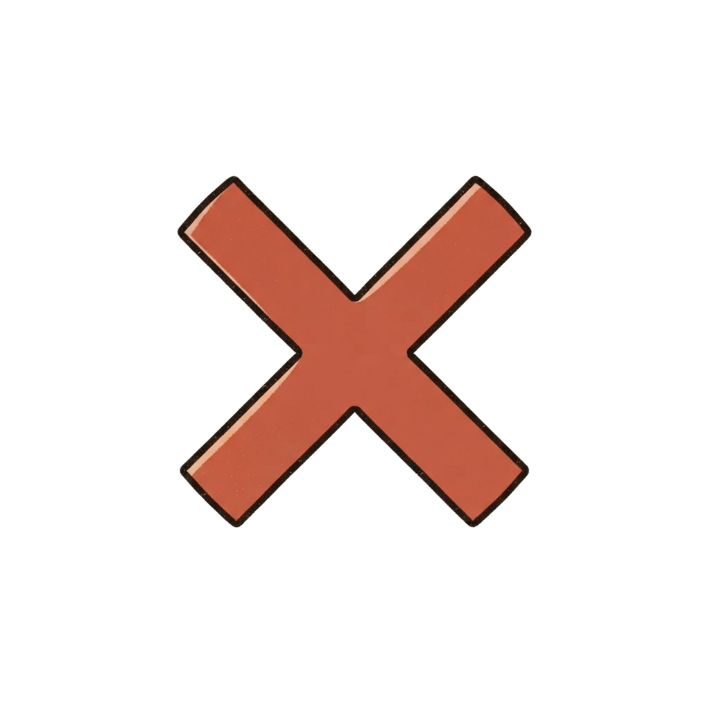

店番AIと少し話して、値段を決めてから支払います。
🍓 ICHIGOガチャガチャってなに?しくみ・つくった話はこちら
呼び名(任意、みんなに見えます)を入力してください。空欄でも進めます。ひらがな・カタカナ・半角英数字のみ使えます(漢字や絵文字は使えません)。
現在の提示価格 ICHIGO ()
店員と直接ご相談ください。値段が決まったらここに表示されます。
現在価格 ICHIGO
ここまでの会話:
確定価格 ICHIGO
この価格で購入しますか?
お支払い ICHIGO


ICHIGOガチャガチャのご利用、ありがとうございました!
🍓 つくった話・裏話はこちら